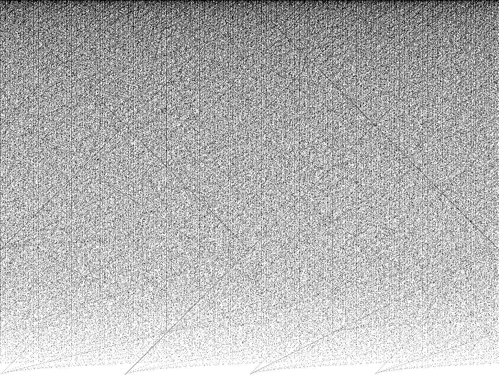
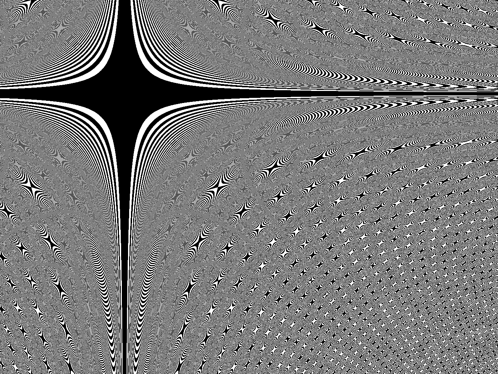
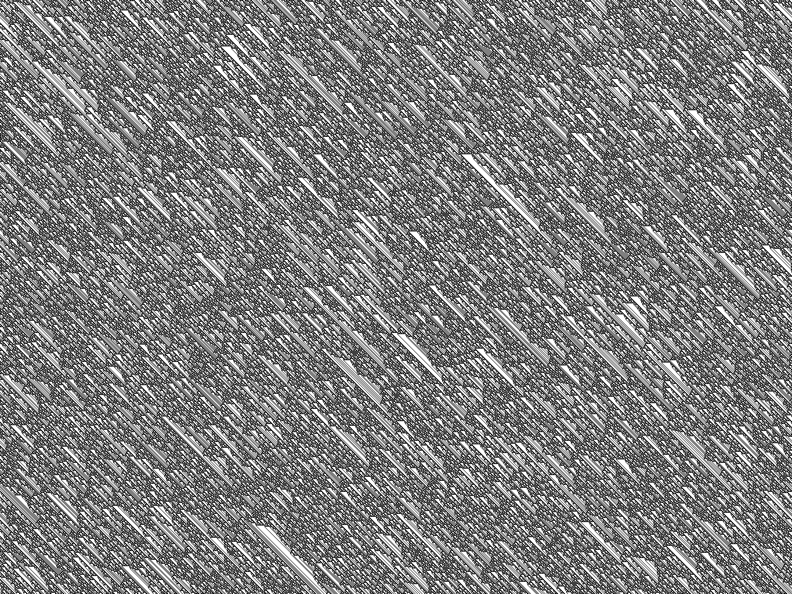

Letter (officially ANSI A) is a standard paper size that measures 11 by 8.5 inches. It is common in Canada and the United States. Sometimes I print math art on the cheap, multipurpose letter paper available at my public library.
Letter paper has an aspect ratio of 22 to 17, which is not simple enough for my liking. But with a half-inch margin on all sides, I get a printing area that measures 10 by 7.5 inches and a simple aspect ratio of 4 to 3. See the next section for examples of this.
XY image given by width 1365 and height 1024. Available as a PDF.

PQ image given by painter 14, q-value 16777216, width 1365, height 1024, x-offset -341, and y-offset -256. Available as a PDF.

Elementary cellular automaton given by rule 120, random initial condition, 1365 cells per generation, and 1024 generations. Available as a PDF.
